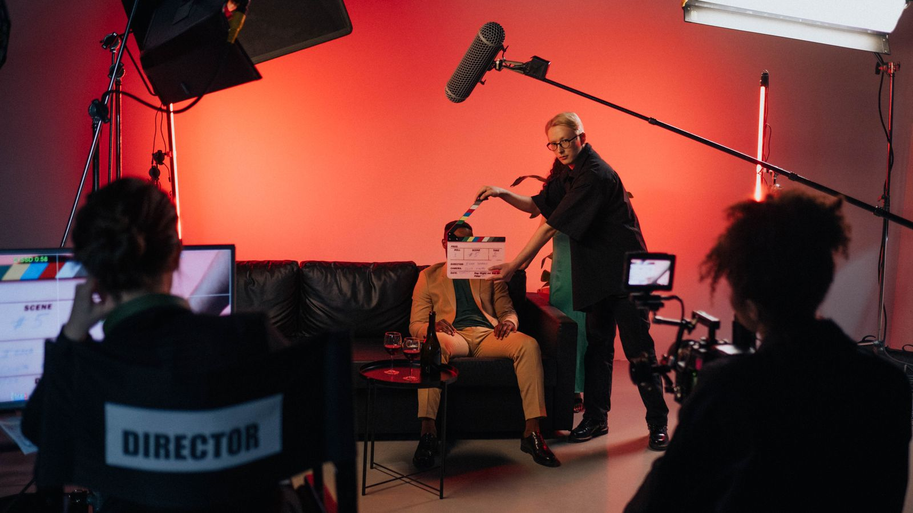
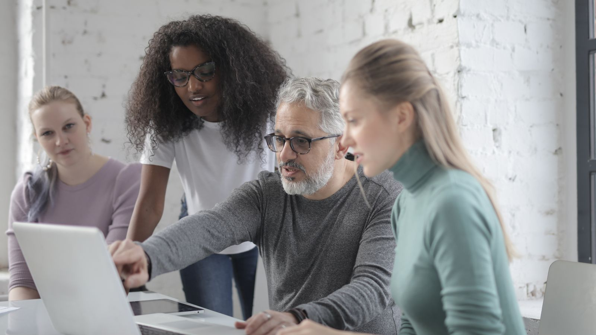

An EU campaign concept that makes “human-led, tech-powered” something you can watch: a behind-the-scenes documentary of PwC's AI experts getting it wrong before they get it right.

The EU AI market is trust-gated, not performance-gated. American buyers tend to use first and trust later; European buyers do the reverse, trusting before they deploy.
With the EU AI Act carrying fines up to €35M or 7% of global turnover, and high-risk obligations enforceable from 2 August 2026, the question in the room isn't “is it powerful?” It's “will this get me personally blamed?”
The market is also early and anxious. Only around 20% of EU enterprises used AI in 2025, and the number-one barrier to adoption is lack of expertise. Even among firms claiming AI is “scaled”, only a third have proper responsible-AI protocols.
PwC has the answer to all of this: IDC MarketScape Leader for European AI Services, ~500 active AI clients, responsible-AI assurance aligned to the Act. The challenge was never the substance. It was that PwC's marketing, like everyone's, spoke the cold language of capability to an audience governed by fear.
Behind every cautious AI decision is a person afraid of being personally accountable for a black box.The one truth the whole campaign hangs on
The sharpest thing we found wasn't a statistic. It was the human truth underneath the statistics. The EU decision-maker evaluating an AI partner isn't really worried about model accuracy. They're worried about standing in front of a board, or a regulator, and being personally accountable for a system they can't fully explain.
Cold competence doesn't soothe that fear; it amplifies it. A firm that only ever shows polished authority implies that any mistake is yours alone. But a firm that shows its own experts wrestling honestly with hard problems says something different: you won't be alone in the room. The way to sell trust to a frightened buyer is to be the one brand willing to be human about how hard this is.

One sentence, and the logic is fully traceable.
Insight. EU buyers fear being personally accountable for a black box, so they trust before they deploy. Idea. A behind-the-scenes documentary, in the candid, affectionate style of Clarkson's Farm, that follows PwC's people as they actually use AI on real client work. Not a highlight reel. The ordinary days: the tool that nails one task and fumbles the next, the model that gets it confidently wrong, the human who catches it, the slow climb from a half-working prototype to something a client can rely on. Objective. Move perception from cold to human, because showing the hard parts honestly is what earns trust in a market that trusts before it buys.
The move is counter-intuitive on purpose. Every competitor sells AI as a clean, finished superpower. This does the opposite. It puts AI on camera as the double-edged tool it really is, the wins and the misfires both, and lets the audience watch PwC's people handle that edge with judgment.
Nobody pretends the tech is flawless, and that is the whole point. You do not win a cautious buyer by insisting your service is great. You win them by being open about the hard parts and letting them decide for themselves. Trust given heart to heart, not bought with a louder claim. It also makes PwC's own line, “human-led, tech-powered”, literal: not a claim about humans, but footage of them.
Most teams would stop at the documentary. The bigger idea is to turn that honesty into a system PwC can own, one named platform where the film is only the most visible part. Call it The Open Standard: show the seams, so a personally liable board can sign its name.
The documentary. Real consultants, real misfires, the human who catches them before they ship. The Pratfall engine, and the source of dozens of social cut-downs.
An always-on, published log of real AI failures and fixes, in the governance format a risk committee already trusts. Cheap to keep, and impossible for a perfection-marketer to copy without indicting their own past claims.
A named, public PwC standard for AI transparency, mapped to the EU AI Act. It discloses model failure, human oversight, and recovery. Once buyers ask "is it to the Open Standard?", PwC owns the vocabulary, the way SOC 2 and ISO became un-ignorable.
Named clients on record: not "PwC was flawless," but "PwC was honest, and the governed process is what let us defend it to our own board."
A first engagement with part of the fee at risk, where the buyer sits inside the process and sees the failures surfaced live.
The audit trail mapped to AI Act obligations. It reframes the buy from "best capability" to "most defensible judgment," and turns brand trust into signed revenue.
↩ Every signed deal feeds new consented post-mortems back into the Register, so the engine fuels itself instead of ending like a campaign.
A visible flaw raises trust, but only for an expert already assumed competent. PwC can borrow it; a weaker rival who confesses just looks unsafe.
Hype hardens a skeptic. Candour removes the claim they were braced to argue against, so there is nothing to push back on.
Comfort with business AI is about 44% and falling. Showing the work supplies the one signal the category is starving for.
Only a firm genuinely good at the recovery can afford to broadcast the failure. That is proof a brochure cannot fake.
Clarkson's Farm isn't a tone we borrowed. Its three defining qualities are the strategy. The show is unscripted, funny, and unafraid to show its star failing; each one is a precise answer to a specific reason the EU buyer keeps their wallet shut. We're not dressing up a sales asset; we're removing the reasons to resist it.
Real working farmers, filmed mid-job. Clarkson's own words: "It isn't created or written or planned. The cameras just film us doing stuff."
Perceived realness reads as the absence of a sales motive: the audience's persuasion-detector never fires, so the trust gate opens (brand authenticity → trust).
Comfort with AI in marketing now sits around 44%, and polished AI-speak reads as a red flag. Observed realness is the one credibility a rival can't fake with another whitepaper.
Clarkson plays the buffoon who gets it wrong while the real experts are right, so viewers happily sit with hard, high-stakes problems because it's entertaining, not preachy.
Humour lowers defences: it occupies the energy that would otherwise build counter-arguments, and positive mood shifts people into open, receptive processing (mood-as-information).
A buyer facing €35M fines and personal board-level accountability is threat-primed and flinches from jargon-heavy "risk & governance" pitches. Humour relaxes them enough to stay in the room.
Year one cleared £144 profit after a ~£90,000 hole, and Clarkson filmed his disasters on purpose. The engine is a capable person visibly humbled, working through it.
The pratfall effect (Aronson, 1966): a visible stumble makes an already-competent expert more likeable and human, and showing the process reads as documentary truth, not a sales claim.
Lack of expertise is the #1 EU adoption barrier, and ~76% of executives can't explain their AI's outputs (Accenture). An expert who wrestles honestly on camera says: "you won't be alone when you own this."
Rivals can copy the documentary format; they can't copy realness, because their own glossy AI marketing is built to suppress it. That leaves the warm, human, fallible lane completely empty, exactly as public comfort with AI in marketing is falling. The differentiation is structural, not decorative.
Grounded in the pratfall effect (Aronson, Willerman & Floyd, 1966), reduced counter-arguing (Lyttle, 2001), mood-as-information (Schwarz & Clore), and brand-authenticity → trust research (Edelman). Full sources in the project notes.
The architecture is hero-and-spokes. The documentary is the hero, the thing worth making well. From it we cut roughly twenty social pieces, each engineered for a channel and a moment in the funnel.
4 × 8–12 min episodes. Hosted on YouTube + gated. The asset everything else is cut from.
Primary EU B2B channel: thought-leadership, paid, and lead-gen where the decision-makers are.
~20 vertical clips (one expert, one mistake, one fix), plus Meta retargeting.
An invite-only screening turns the film into trade-press coverage and share of voice.
The bet is deliberate: we weighted spend toward production rather than media because one genuinely good owned asset earns organic reach in a category where every rival runs cold paid content. And it's worth naming the relevance. This video-first, hero-then-cut-downs logic is exactly how a small, aesthetics-driven China-to-overseas agency wins: make one beautiful thing, then atomise it across channels and markets.
Map the field and it converges.
McKinsey publishes agentic-AI reports. Deloitte sells process and efficiency through “State of AI”. Accenture has “AI Refinery” and the “digital core”. EY and KPMG run Microsoft-partnership press releases with no faces in them. IBM watsonx's “Let's create” is the most human of the set, and still glossy. Every one of them lives in the cold, capability-first register. The warm, behind-the-scenes territory isn't crowded; it's vacant.
And the differentiation ties straight back to PwC's real assets. “The New Equation” and “human-led, tech-powered” already point here; the documentary just delivers on them. The boldness lives in the story, never in the brand assets, which stay locked to PwC's restrained grey palette and plain voice. That's how you claim an empty lane without breaking a conservative brand: out-human the category, don't out-shout it.
Every number here is a projection, mapped one-to-one to the objectives and benchmarked against published B2B norms, and deliberately set conservative. We'd rather under-promise on paper than inflate a student concept.
I was team lead and creative originator.
I came up with the documentary idea, turned PwC's “human-led, tech-powered” tagline into the creative spine, architected the integrated channel plan, and owned the budget, the KPI framework and the top-down sizing logic. I coordinated a five-person team (media planner, content strategist, competitive analyst, design & production lead), set the work split, and integrated five workstreams into one coherent story I then presented to PwC.
The concept nearly didn't survive its own pressure-test. Run past tutors and a mock client review, the objection was blunt: a Big Four firm sells authority, and putting its experts on camera getting things wrong looks reckless. No risk-averse brand team would sign it off. The idea was one meeting from being sanded into a safe, glossy “expert explainer,” which would have quietly killed the only thing that made it work.
I treated that objection as the brief. The fear underneath it wasn't “bad idea,” it was “I can't defend this internally,” so the job was to make saying yes feel safe. I argued it back in PwC's own language: 56% of CEOs say they get nothing from AI, lack of expertise is the #1 barrier, and EU buyers trust before they deploy. Here, controlled candor is the authority move, and it delivers PwC's own “human-led” promise instead of contradicting it.
Then I drew the edges of the risk myself. The candor stays on the process, never on competence, client work or confidential outcomes; the visual system stays locked to PwC's restrained palette so the boldness lives in the story, not the brand; consent and sign-off gates are built in. By folding the doubters' concerns back in as guardrails, the people who'd pushed hardest ended up co-owning the version we kept.
The concept survived intact, earned the top grade, and went to PwC. It held for the same reason the film would: honesty disarmed a wary room instead of pitching at it, and the defence quietly proved its own thesis. The lesson: a bold idea survives a cautious client when you defend it with the client's own logic instead of your taste, and make the “yes” feel safe by drawing the edges of the risk before they have to. Reframing “risky” as “on-strategy, and governed” was most of the job.